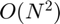

Math 315 Lab 6
The following lab explores the composite trapezoidal rule that is used to estimate the integral of different functions.
Contents
The Code
The following code computes the composite trapezoidal rule approximation for n intervals until the error is less than a tolerance level of 1000*epsilon. We estimate the error with the relative difference between the current and next approximation of N and 2N intervals respectively by assuming . To compute the composite trapezoidal rule approximations for N intervals, we compute the function values at equally spaced points. Then we recursively compute the approximation for 2N intervals by reusing the values computed in the previous approximation and then computing the missing values that are in between the previous intervals. To solve the slow convergence issue and when for small N, we implement a maximum and minimum number of times, respectively, that the program will loop through and compute the next approximation using 2N intervals. During each loop, we also compute and store the error estimate. Using these values, we can plot the error as the number of intervals N increases.
disp(fileread("composite_trapezoidal_rel.m"));
function [is, errs] = composite_trapezoidal_rel(f, a, b)
tol = 1000 * eps;
min = 2^5;
max = 10.^8;
dx = b-a;
i = [0.5, 0.5] * f([a; b]) .* dx;
n = 1;
is = [];
errs = [];
while n < min || (abs((i-i2) ./ i2) > tol && n < max)
dx = dx ./ 2;
di = sum(f(a+dx:2*dx:b-dx)) * dx;
i2 = i;
i = i ./ 2 + di;
n = 2*n;
is = [is; n, i];
errs = [errs; n, abs((i-i2) ./ i2)];
end
errs = errs + tol/100000;
end
Integral A
The composite trapezoidal rule approximations of this integral starts near epsilon then jumps up. The start of the graph is likely because for N=2. Afterwards, the error rapidly decreases to converge near the tolerance of 1000*epsilon. The rate of convergence is .
close all; f = @(x) exp(sin(x)); a = 0; b = 2 * pi; [i, errs] = composite_trapezoidal_rel(f, a, b); p = polyfit(log(errs(2:end, 1)), log(errs(2:end, 2)), 1); x = linspace(min(errs(2:end, 1)), max(errs(2:end, 1))); y = exp(p(2)) * x .^ p(1); fprintf('y = %g * x^%g\n', exp(p(2)), p(1)); figure1 = figure(); loglog(errs(:, 1), errs(:, 2), '-o', x, y); xlabel('N'); ylabel('Relative Error'); legend('Rel Errs', 'Convergence Rate Line'); title('Convergence Graph for Integral A');
y = 1.90354e+11 * x^-16.7988

Integral B
The composite trapezoidal rule approximations of this integral converge in a nearly linear line from the N=4 until the tolerance level. This line has a slope of ~-2. Since this line is plotted in log scale, the convergence rate of this integral is
f = @(x) exp(sin(x)); a = 0; b = pi; [i, errs] = composite_trapezoidal_rel(f, a, b); p = polyfit(log(errs(2:end, 1)), log(errs(2:end, 2)), 1); x = linspace(min(errs(2:end, 1)), max(errs(2:end, 1))); y = exp(p(2)) * x .^ p(1); fprintf('y = %g * x^%g\n', exp(p(2)), p(1)); figure2 = figure(); loglog(errs(:, 1), errs(:, 2), '-o', x, y); xlabel('N'); ylabel('Relative Error'); legend('Rel Errs', 'Convergence Rate Line'); title('Convergence Graph for Integral B');
y = 0.782829 * x^-1.99853

Integral C
The composite trapezoidal rule approximations of this integral converges very rapidly to the tolerance level from N=2 to N=4. The rate of convergence is . The points after are zeros and round off errors around epsilon.
f = @(x) cos(x); a = 0; b = 2 * pi; [i, errs] = composite_trapezoidal_abs(f, a, b); p = polyfit(log(errs(1:2, 1)), log(errs(1:2, 2)), 1); x = linspace(min(errs(1:2, 1)), max(errs(1:2, 1))); y = exp(p(2)) * x .^ p(1); fprintf('y = %g * x^%g\n', exp(p(2)), p(1)); figure3 = figure(); loglog(errs(:, 1), errs(:, 2), '-o', x, y); xlabel('N'); ylabel('Relative Error'); legend('Rel Errs', 'Convergence Rate Line'); title('Convergence Graph for Integral C');
y = 2.02883e+17 * x^-54.8419

Integral D
The composite trapezoidal rule approximations of this integral converges very rapidly to the tolerance level from N=2 to N=4. The rate of convergence is . The points after are zeros and round off errors around epsilon.
f = @(x) 1 + cos(x); a = 0; b = 2 * pi; [i, errs] = composite_trapezoidal_rel(f, a, b); p = polyfit(log(errs(1:2, 1)), log(errs(1:2, 2)), 1); x = linspace(min(errs(1:2, 1)), max(errs(1:2, 1))); y = exp(p(2)) * x .^ p(1); fprintf('y = %g * x^%g\n', exp(p(2)), p(1)); figure4 = figure(); loglog(errs(:, 1), errs(:, 2), '-o', x, y); xlabel('N'); ylabel('Relative Error'); legend('Rel Errs', 'Convergence Rate Line'); title('Convergence Graph for Integral D');
y = 1.1259e+17 * x^-57.6439

Integral E
The composite trapezoidal rule approximations of this integral starts near epsilon then jumps up. The start of the graph is likely because for N=2. Afterwards, the errors follow a nearly linear line until convergence at the tolerance level. This line has a slope of ~-2. Since this line is plotted in log scale, the convergence rate of this integral is
f = @(x) abs(cos(x)); a = 0; b = 2 * pi; [i, errs] = composite_trapezoidal_rel(f, a, b); p = polyfit(log(errs(3:end, 1)), log(errs(3:end, 2)), 1); x = linspace(min(errs(3:end, 1)), max(errs(3:end, 1))); y = exp(p(2)) * x .^ p(1); fprintf('y = %g * x^%g\n', exp(p(2)), p(1)); figure5 = figure(); loglog(errs(:, 1), errs(:, 2), '-o', x, y); xlabel('N'); ylabel('Relative Error'); legend('Rel Errs', 'Convergence Rate Line'); title('Convergence Graph for Integral E');
y = 10.7022 * x^-2.00697

Integral F
The composite trapezoidal rule approximations of this integral are exact since the integral geometrically is a trapezoid and thus converge instantly. The errors are not round-off errors but rather small numbers added to display a graph in log scale.
f = @(x) x; a = 0; b = 1; [i, errs] = composite_trapezoidal_rel(f, a, b); p = polyfit(log(errs(2:end, 1)), log(errs(2:end, 2)), 1); x = linspace(min(errs(2:end, 1)), max(errs(2:end, 1))); y = exp(p(2)) * x .^ p(1); fprintf('y = %g * x^%g\n', exp(p(2)), p(1)); figure6 = figure(); loglog(errs(:, 1), errs(:, 2), '-o', x, y); xlabel('N'); ylabel('Relative Error'); legend('Rel Errs', 'Convergence Rate Line'); title('Convergence Graph for Integral F');
y = 2.22045e-18 * x^3.27893e-15

Integral G
The composite trapezoidal rule approximation of this integral converges to the tolerance level in a nearly linear line in log scale. This line has a slope of ~-2. Since this line is plotted in log scale, the convergence rate of this integral is
f = @(x) x.^2; a = 0; b = 1; [i, errs] = composite_trapezoidal_rel(f, a, b); p = polyfit(log(errs(2:end, 1)), log(errs(2:end, 2)), 1); x = linspace(min(errs(2:end, 1)), max(errs(2:end, 1))); y = exp(p(2)) * x .^ p(1); fprintf('y = %g * x^%g\n', exp(p(2)), p(1)); figure7 = figure(); loglog(errs(:, 1), errs(:, 2), '-o', x, y); xlabel('N'); ylabel('Relative Error'); legend('Rel Errs', 'Convergence Rate Line'); title('Convergence Graph for Integral G');
y = 1.4406 * x^-1.99558

Integral H
The composite trapezoidal rule approximation of this integral converges to the tolerance level in a nearly linear line in log scale. This line has a slope of ~-2. Since this line is plotted in log scale, the convergence rate of this integral is
f = @(x) x.^3; a = 0; b = 1; [i, errs] = composite_trapezoidal_rel(f, a, b); p = polyfit(log(errs(2:end, 1)), log(errs(2:end, 2)), 1); x = linspace(min(errs(2:end, 1)), max(errs(2:end, 1))); y = exp(p(2)) * x .^ p(1); fprintf('y = %g * x^%g\n', exp(p(2)), p(1)); figure8 = figure(); loglog(errs(:, 1), errs(:, 2), '-o', x, y); xlabel('N'); ylabel('Relative Error'); legend('Rel Errs', 'Convergence Rate Line'); title('Convergence Graph for Integral H');
y = 2.82458 * x^-1.9945

Convergence Rates
From the convergence rates above, I conjecture that the rate of convergence in terms of the number of sub-intervals is . Since the degree of precision for composite trapezoidal rule is 1, the convergence rate of the integral should be O(N^-2), which is shown in integrals B, E, G, and H. To test this, I will approximate the integral of on the interval 0 to 1. In the graph shown below, the convergence rate is .
f = @(x) 5*x.^7-8*x.^3; a = 0; b = 1; [i, errs] = composite_trapezoidal_rel(f, a, b); p = polyfit(log(errs(2:end, 1)), log(errs(2:end, 2)), 1); x = linspace(min(errs(2:end, 1)), max(errs(2:end, 1))); y = exp(p(2)) * x .^ p(1); fprintf('y = %g * x^%g\n', exp(p(2)), p(1)); figure9 = figure(); loglog(errs(:, 1), errs(:, 2), '-o', x, y); xlabel('N'); ylabel('Relative Error'); legend('Rel Errs', 'Convergence Rate Line'); title('Convergence Graph for Test Integral 1');
y = 1.76531 * x^-1.98856

I also conjecture that integrals over exactly one period of a smooth and periodic function has superconvergence, meaning that it will converge much quicker than expected. This is shown in integrals A, C, and D. This is not shown in integral F as it's integral is a geometric trapezoid, which can be perfectly approximated immediately by a trapezoidal approximation. To test this, I will approximate the integral of on the interval  to . The convergence rate is
to . The convergence rate is
f = @(x) sin(x) + cos(x) + 1; a = pi / 4; b = 9 * pi / 4; [i, errs] = composite_trapezoidal_rel(f, a, b); p = polyfit(log(errs(1:2, 1)), log(errs(1:2, 2)), 1); x = linspace(min(errs(1:2, 1)), max(errs(1:2, 1))); y = exp(p(2)) * x .^ p(1); fprintf('y = %g * x^%g\n', exp(p(2)), p(1)); figure10 = figure(); loglog(errs(:, 1), errs(:, 2), '-o', x, y); xlabel('N'); ylabel('Relative Error'); legend('Rel Errs', 'Convergence Rate Line'); title('Convergence Graph for Test Integral 2');
y = 2.38995e+15 * x^-51.8575